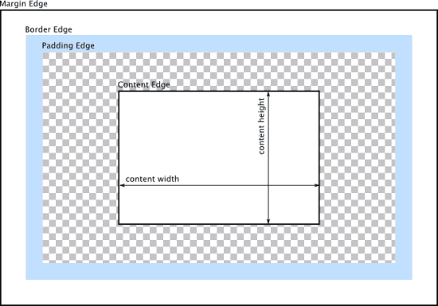

Základy CSS
by Jiří Znamenáček
Úvod
CSS (Cascading Style Sheets) je stylový jazyk určený primárně k popisu vzhledu a formátování dokumentů zapsaných pomocí značkovacích jazyků (markup languages).
Jeho jasnou výhodou je oddělení prezentace od vlastního obsahu dokumentu. To s sebou nese možnost prezentovat stejné dokumenty mnoha různými způsoby.
Přestože původně byly stylovací možnosti jazyka převážně statické, s pokračujícím vývojem pomalu (ale jistě) zahrnují čím dál tím více dynamických (animace…) a také na událostech závislých prvků (vyznačení myší, změna měřítka…).
Poznámka
Většina značkovacích jazyků, pro které se stylování pomocí CSS používá, má pro většinu svých elementů daná výchozí pravidla, jak mají vypadat a jak se mají chovat.
Ale zobrazování „čistého“ XML se řídí jediným pravidlem (pravda, dnes už pouze v Safari) – textové uzly jsou vypsány v řádcích zleva doprava a odshora dolů.
Stylopis
CSSkový stylopis (stylesheet) obsahuje v nejjednodušším (a nejčastějším) případě libovolně velkou skupinu pravidel následujícího tvaru:
selektor(y) { formátovací pravidla }
Přitom:
- selektor – vybírá prvky dokumentu, na něž se aplikují formátovací pravidla;
- formátovací pravidla – popisují vzhled (a někdy už i částečně chování) prvků dokumentu vybraných pomocí příslušných selektorů.
Selektorů – a tím pádem vlastně i vybraných skupin prvků z dokumentu – může být před jedněmi formátovacími pravidly více než jeden, a v tom případě se od sebe navzájem oddělují čárkou.
Svázání stylopisu s dokumentem
Typicky bývá stylopis umístěn v samostatném souboru a k cílovému dokumentu se jen nějakým způsobem připojí (ať už zpracovávajícím programem nebo nějakou instrukcí uvnitř souboru), ale některé značkovací jazyky umožňují jejich zahrnutí přímo do vlastního dokumentu.
K „čistému“ XML se připojuje stylopis pomocí následující řídicí konstrukce:
<?xml-stylesheet href="stylopis.css" type="text/css"?>
Stylopisů se dá za sebou napsat více, pravidla se uplatňují postupně ze všech z nich podle pravidel specificity.
K HTML se dá stylopis připojit několika velmi rozdílnými způsoby, byť výsledek by měl být ve všech případech stejný.
Selektory
Možnosti selektorů se s každou další verzí CSS rozšiřují. Pro úplný přehled viz:
Selektory – ukázky I
div { /* všechny elementy <div> */ }
div.dark { /* elementy <div> spadající do třídy "dark" */ }
.dark { /* libovolné elementy spadající do třídy "dark" */ }
div[foo*="test"] {
/* ty elementy <div>, jejichž atribut @foo obsahuje
podřetězec "test" */
}
#mujElement { /* element s atributem @id="mujElement" */ }
div p { /* elementy <p> kdekoliv jako potomci elementů <div> */ }
div > p { /* elementy <p> přímo pod elementy <div> */ }
div:first-child {
/* element <div>, který je prvním potomkem svého rodiče */
}
div:nth-child(3) { /* každý třetí <div> svého rodiče */ }
div::before {
/* před každý <div> bude přidán výsledek tohoto pravidla */
}
Selektory – ukázky II
Selektory ovšem nemusí být jen takhle jednoduché – dají se aplikovat i na více podstromů najednou..
div, p {
/* aplikuje se na každý <div> i na každý <p> */
}
..nebo třeba různým způsobem řetězit:
div[foo$="test"] > p.light:hover {
…
}
Specifita selektorů &
Asi nepřekvapí, že různými kombinacemi selektorů je možno vybrat stejnou podmnožinu prvků z dokumentu. Základní otázka pak zní, která z formátovacích pravidel se v takovém případě použijí? V kombinaci s možnostmi výběru různých pravidel podle cílového média a vlastního nastavení uživatele se jedná o docela komplikovanou záležitost, ale vcelku se dá řídit tímto (seřazeno podle rostoucí priority):
- potomci dědí vlastnosti svých rodičů;
-
poslední stejné pravidlo vyhrává;
📝Myšleno pravidlo se stejným selektorem.
-
specifičtější selektor zvítězí;
📝Třebas selektor
#pro @id vyhraje nad selektorem.pro @class, který zase vyhraje nad selektorem pro jméno elementu. -
klauzule
!importantpřebije ostatní nastavení;📝Ale radši se jí vyhýbejte. -
nastavení pro specifičtější médium přepíše obecnější;
📝Například pravidla pro tisk při tisku nepřekvapivě vyhrají, ale jinak se vůbec neprojevují.
-
vlastní uživatelovo nastavení přebije všechno.
📝Takže se nikdy nedá spolehnout na to, že uživatel uvidí dokument přesně tak, jak si tvůrce usmyslel.
Selektory a jmenné prostory
Jelikož jmenné prostory jsou naprosto zásadní (byť zhusta nepochopenou) součástí XML, je pochopitelně třeba, aby s nimi jazyk CSS uměl pracovat. Jejich použití je naštěstí podobně jednoduché jako v samotném XML – pomocí pravidla @namespace se zavedou a pomocí svislítka | se používají:
/* výchozí (nulový) jmenný prostor */
@namespace ReferenceJmennéhoProstoru;
/* jmenný prostor s prefixem */
@namespace PREFIX ReferenceJinéhoJmennéhoProstoru;
/* elementy z výchozího jmenného prostoru */
selektor { formátovací pravidla }
/* elementy ze jmenného prostoru s prefixem PREFIX */
PREFIX|selektor { formátovací pravidla }
/* elementy ze všech jmenných prostorů */
*|selektor { formátovací pravidla }
; na konci @-pravidla! Bez něj to opravdu nefunguje, stejně jako u @import ^_^
Přitom reference jmenného prostoru může klasicky být buď obyčejný řetězec (v uvozovkách) nebo odkaz na zdroj pomocí funkcí url() nebo src() (znáte z pravidla @import). Nicméně je tam pár výjimek a drobností, na které je třeba dávat pozor, takže si před prvním použitím radši přečtěte dokumentaci.
Formátovací pravidla
O formátovacích pravidlech se dá říci to samé co o selektorech – jejich možnosti se s každou další verzí CSS rozšiřují. A to enormně. Kde jsme ještě zcela nedávno uměli víceméně pouze měnit barvu a velikost textu a sem tam do mixu přihodit nějaký rámeček, dnes sršíme stíny na všechny strany, vlastními fonty a dokonce i animacemi bez jediné řádky kódu v JavaScriptu.
Základní přehled najdete tady u mě na webu, dosti úplný přehled pak viz například CSS Reference @ MDN. Jinak samozřejmě standardy visí na W3C.
Formátovací pravidla – ukázky
<h3>Ahoj, <strong>světe</strong>! Jak se máš?</h3>
h3 { color: white; text-shadow: blue 0 0 8px; }
strong { color: rgba(0,222,0,0.5); }
<p>Já jsem transformován!</p>
p {
outline: 1px dotted black;
width: 200px;
transform: matrix(1, -0.2, 0, 1, 0, 0);
}
Dědičnost
Základním pravidlem při aplikaci formátovacích pravidel v CSS je:
Potomci dědí všechna nastavení svých rodičů, pokud je sami nepřepíší novými.
Jednoduchý příklad:
<h3>Ahoj, <strong>světe</strong>! Jak se máš?</h3>
h3 { color: green; }
<strong> je také zobrazen zeleně, protože to je pravidlo jeho rodiče.
<h3>Ahoj, <strong>světe</strong>! Jak se máš?</h3>
h3 { color: green; }
strong { color: red; }
<strong> jinou barvu (červenou), protože mu tak bylo stylopisem řečeno.
„Box-model“
Základní a v některých případech bohužel poměrně matoucí formátovací jednotka má následující strukturu:

CSS box model
© 2005-2014 Mozilla Developer Network and individual contributors
Problémy dělá hlavně výchozí nastavení přičítání rozměrů okrajů k vlastnímu obsahu. Naštěstí se dá už nějakou dobu přepnout pomocí pravidla { box-sizing: border-box; }.
100% - 2*5px neumí CSSko dodnes.
Omezení selektorů a formátovacích pravidel
Selektory v CSS jsou sice mocné, ale spoustu věcí – zvláště v porovnání třeba s XPath'em – neumí (nebo aspoň donedávna neuměly). A to samé platí pro formátovací pravidla – umí toho hodně, ale psát v nich skutečné rozumně se chovající GUI je peklo. Mezi typická omezení patří:
- nemožnost odkázat se na (a následně ostylovat) rodiče nebo obecně předka vybraného prvku dokumentu;
-
absence výrazů a proměnných;
📝Bez nich třebas globální výměna jedné barvy za druhou znamená operaci „najdi a nahraď“ v textu…
-
nemožnost stylovat prvky pomocí tzv. flex-pravidel a do gridu;
📝Což je ovšem naprosto základní požadavek při tvorbě GUI.
- …
Některé z těchto prvků nebyly do CSS zahrnuty primárně kvůli náročnosti na zpracování, ale spousta z nich se tam pomalu dostává (např. formátování pomocí flex'u, základní podpora proměnných), zvláště v připravovaných CSS Level 4 návrzích.